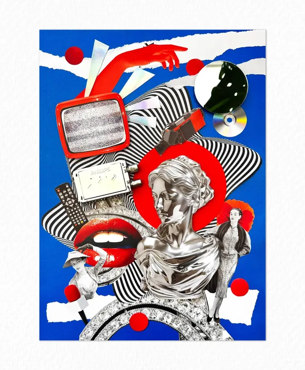
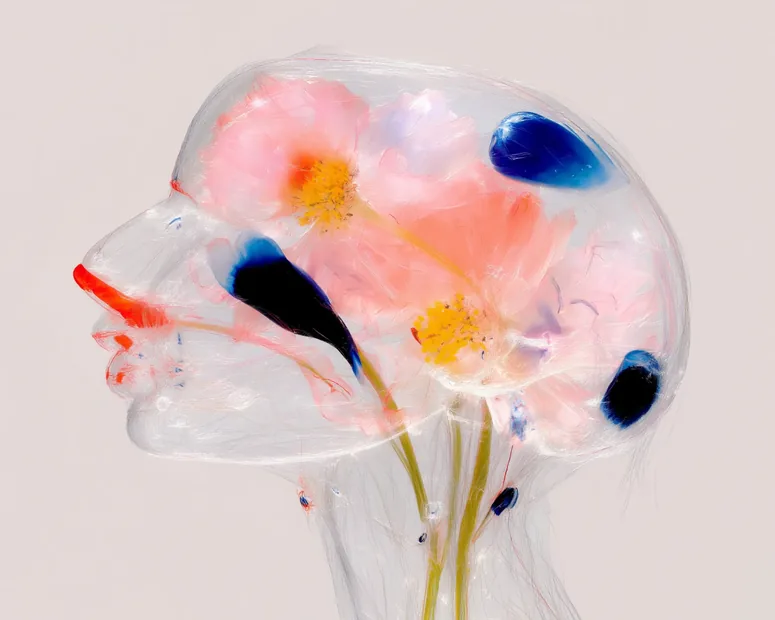
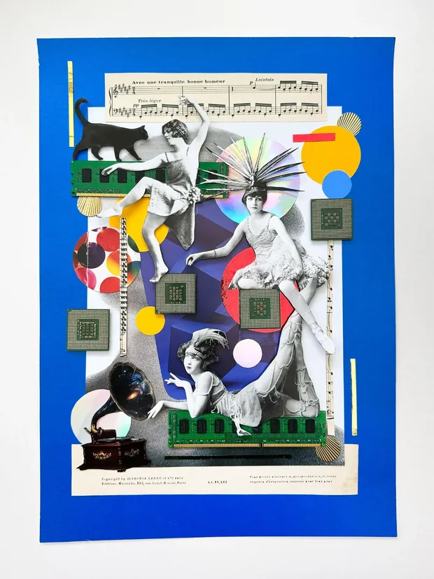
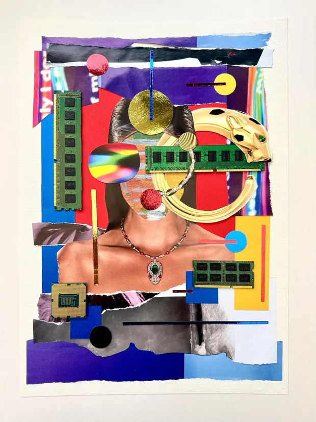

An application for the role of Senior Product Designer
Hello




I'm Irina Csapo, a senior product designer with 15 years behind me. Most of that time has gone on the two things this role asks for at once: the experience a client sees, and the tooling the people inside the business use to make it happen. E-commerce, regulated fintech, healthcare, and hardware that sits in people's homes.
I am also a practising artist but this isn't the reason to hire me. It is one of the reasons I want to work at Sotheby's so much, to be closer to the art world and perhaps, the reason I am writing to you like this rather than just applying quietly through a form.
What this is
Four pieces of my work I mapped to your job description. Each is described the way you would describe an art object: what it is, where it came from, the condition it was found in, and what it achieved.
Then a note on institutions, and a condition report, because it seemed wrong to make a catalogue and leave out the part where you disclose the flaws.
- Specialisms
- Consumer experience
Operational tooling
Native mobile
Design systems - Sectors
- E-commerce
Fintech and payments
Healthtech
Connected hardware - Experience
- Fifteen years
Web & Mobile Apps
UX Research
Prototypes/Workflows - Available to view
- irinacsapo.co.uk irina.love @irina_csapo_art Download CV
Omaze UK, Monthly Millionaire
Consumer subscription experience, mobile-first, built within Shopify
- Provenance
- Commissioned following a subscription price increase from £10 to £15, which required the business to demonstrate new value to an audience it had just asked for more money.
- Condition
- Launched at approximately £650,000 per month against a forecast exceeding £1,000,000.
- Result
- 35% conversion uplift. £1,500,000 in a single month, sustained thereafter above £1,000,000.
Funnel analysis showed two things worth more than any opinion in the room: the customer base skewed to forty-five and over, and mobile users engaged almost entirely with the lower half of the screen. That settled the argument about layout. The page was rebuilt around reachable actions, with value and trust placed above the fold and type sized for a real phone in real light.
Three hypotheses were then tested in sequence. Third-party trust signals returned 7.3%. Winner reaction footage as a looping hero returned 4.8%. Reframing the subscription as the better value, rather than the alternative to a single purchase, returned 8.5%. That third change carried the risk of simply moving revenue from one pocket to another, so both figures were measured. It did not.
Sole designer. Two engineers, two product managers, growth and CRM.
Paycada
Operational platform for automated invoice chasing, regulated fintech
- Provenance
- Built from nothing. Sole designer for three years, across platform, marketing site and brand.
- Condition
- A business asking its own customers for money, repeatedly, without damaging the relationship it depends on.
- Result
- A shipped product with a design system beneath it: three tiers of tokens, full component state coverage, and an accessibility audit that identified two live contrast failures already in production.
The workflows are the unglamorous kind, and there are a great many of them. Add a user, remove a user, create an organisation, edit its permissions, decide what leaves the building and when.
The design question underneath all of it is control. What goes out automatically, what a person sees before it goes, and how far an escalation is permitted to travel before somebody has to decide. Automate that badly and you have built a machine that irritates the people who pay you. Most of the work was in deciding where the human belongs.
Sole designer, three years. Screens available on request.
Veva
Native application for electric vehicle charge points, iOS and Android
- Provenance
- Hardware installed at a customer's home, requiring a single application to serve two people with nothing in common.
- Condition
- The homeowner lives with the product for years. The engineer has one visit, outdoors, on a poor connection, to make it work at all.
- Result
- Eight charging states authored in Rive and delivered to both platforms. An installation flow that completes without the home network.
The installer's experience was designed first, because it is the gate. If the charge point never reaches the network, the owner never sees a schedule, and the first experience of something expensive is a call to support.
One decision followed from that. Commissioning cannot depend on the home wifi being reachable, so the application detects the situation and falls back to a local hotspot broadcast by the charge point itself. The cleaner flow, the one that assumes working credentials and a good signal, makes a better-looking design file and fails in a driveway.
Sole designer. Business analyst, product manager, iOS and Android engineers.
Tender Tech
Mixed media, electronic waste on board, ongoing
- Materials
- Circuit boards, ribbon cable, keyboard keys and hard drive platters, recovered from disposal.
- Exhibited
- Bucharest Collage Festival. Talk delivered at MK Geek Night, “Tender Tech: Joy, E-Waste and the Art of Delightful Making”.
- Note
- Not offered as a qualification.
Included because it explains the other three. I began in print and branding before moving into product, and I have never entirely lost the habit of treating a discarded object as the most interesting thing in the room.
It is also the honest answer to why this application takes this form rather than the form of a covering letter.
This page is laid out as a catalogue, which may read as a flourish. It isn't. I'm currently building a tool that takes a set of images and lets you read them as a book, spread by spread, because I have never found a satisfying way to look at a body of work online and I got tired of waiting for one.
It is unfinished. What follows is it running.
The reader isn't loading here, which is the honest state of a thing still being built. I'd be glad to show you where it has got to.
Sotheby's has been selling things since 1744 and is now also shipping software. Those two facts sit in tension, and I suspect the tension is most of the job.
Most product designers treat heritage as drag: the weight that slows the release down, the approval that has to be routed around. I have never been able to see it that way. I spent the first part of my career in print and branding before moving into product, and I make pictures out of things other people have thrown away, so I am constitutionally inclined to believe the old thing is the valuable thing.
In practice that means moving at the pace a modern product team needs without treating the institution around it as an obstacle. A name that has survived two hundred and eighty-two years is an asset most companies would pay almost anything to have. It should be designed with, rather than in spite of.
Offered as seen
The following is noted in the interest of accuracy
No auction house experience
I know this world as someone who makes and exhibits work within it, not as someone who has worked inside the business of it. I would be learning the trade, and I would rather say so than imply that fifteen years transfers wholesale. What does transfer is above: complex operational workflows, commercial outcomes on the consumer side, native mobile, and the discipline of designing for two audiences at once.
Research
Most of mine has been behavioural and quantitative, alongside usability and prototype testing. I have not personally led an end-to-end qualitative programme with primary interviews at its centre. It is the thing I am most actively closing, and I would want to begin by sitting with specialists rather than with a research plan.
Location
Milton Keynes, which is a little over half an hour from Euston. Remote suits the way I work and New Bond Street is straightforward.